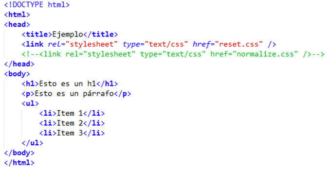

CSS son las siglas en inglés de Cascading Style Sheets, que significa «hojas de estilo en cascada». Es
un lenguaje que se usa para estilizar elementos escritos en un lenguaje de marcado como HTML.
CSS fue desarrollado por W3C (World Wide Web Consortium) en 1996 por una razón muy sencilla. HTML no fue
diseñado para tener etiquetas que ayuden a formatear la página. Está hecho solo para escribir el marcado
para el sitio.
Se incluyeron etiquetas como <font> en HTML versión 3.2, y esto les causó muchos problemas a los
desarrolladores. Dado que los sitios web tenían diferentes fuentes, fondos de colores y estilos, el
proceso de reescribir el código fue largo, doloroso y costoso. Por lo tanto, CSS fue creado por W3C
para resolver este problema.
La relación entre HTML y CSS es muy fuerte. Dado que HTML es un lenguaje de marcado (es decir,
constituye la base de un sitio) y CSS enfatiza el estilo (toda la parte estética de un sitio web),
van de la mano.
CSS no es técnicamente una necesidad, pero no querrás tener un sitio que solo tenga HTML, ya que se
vería completamente desnudo.
En 2007, Eric Meyer (hablaremos de él más adelante) en su blog, planteó la discusión sobre cómo lidiar con estas inconsistencias de los navegadores y generó una gran discusión. Estas inconsistencias que presentan los navegadores al mostrar o rende rizar elementos pueden ser sutiles o más burdas, como diferentes medidas para el margen superior e inferior en los títulos o la altura de la línea estándar, que pueden afectar profundamente las alturas de los elementos y alineaciones.
Ya sabemos que es una hoja de estilo y que podemos usarla como normalmente usamos las hojas de estilo en un proyecto web, ya sea dentro del archivo HTML o en un archivo externo (y al que pueden acceder todos los demás archivos).
Lo más común es que antes de comenzar a estilizar el proyecto, el archivo reset css ya está agregado para que se elimine el formato original de los navegadores.
Porque si se agrega el reset CSS en medio del proyecto, por ejemplo, puede generar dolores de cabeza ya que el layout se creó tomando como referencia el formato de los navegadores y no la estandarización de los elementos que fueron reiniciados.
Entendemos que, para mitigar el formato original entre diferentes navegadores, debemos seleccionar todas las tags y agregarles los resets, como margin, padding, border, etc.
Cada uno puede crear su propio reset CSS de acuerdo con las necesidades de su proyecto o también puede utilizar algún reset listo. Uno de los más utilizados y conocidos fue desarrollado por Eric Meyer, en el blog nos explica un poco sobre la técnica y cómo desarrolló su código reset.

Aunque aquí vas a aprender a crear un diseño visual de página utilizando estilos CSS, debes saber que esto no ha sido siempre la técnica normal. Cuando se empezó con el diseño web a mediados de los 90, el único método que se podía emplear para crear estructuras visuales complejas, como por ejemplo la presentación en varias columnas, consistía en emplear el elemento tabla (table). La tabla HTML estaba pensada inicialmente para mostrar datos de manera estructurada, en filas, columnas y celdas. Sin embargo los diseñadores empezaron a utilizar este elemento como base para las estructuras visuales de las páginas. En aquel momento esa técnica estaba plenamente justificada: las tablas era lo único que tenían para generar el tipo de diseños que se necesitaban y, además, eran un recurso extremadamente flexible.
A partir de aquí, empezaron a utilizarse técnicas como el anidamiento de tablas, es decir, crear tablas dentro de celdas de otras tablas de mayor tamaño.
CSS ha sustituido ya el empleo de tablas para organizar las páginas, por lo que los elementos de tabla de HTML van regresando, poco a poco, a su función original, que es la de mostrar datos estructurados, y abandonan su papel como armazón visual de las páginas. Seguramente podrás seguir encontrando numerosos ejemplos de este tipo de estructuras en la web, pero en este libro no vas a aprender a crearlas, sino que vas a aprender los conceptos básicos de CSS que nos permiten obtener los mismos resultados.
Antes de la estructura visual de nuestras páginas web tenemos que decidir unas cuantas cosas. Lo primero es qué anchura va a tener. Hay dos categorías principales de estructuras en base a su anchura: las de anchura fija y las de ancho variable. En las estructuras de ancho fijo todos los elementos de la página se anidan dentro de un contenedor que tiene un ancho explícito (en este ejemplo utilizamos el valor de 960 pixels, pero se suele utilizar también la unidad de medida em). La anchura fija es una solución muy cómoda para el diseñador ya que permite ubicar con precisión los distintos elementos (cabeceras, barras laterales y pies de página). Además aporta un esqueleto robusto para otros elementos, como la anchura de párrafo o el posicionamiento de imágenes cuando éstas aparecen en gran número (por ejemplo en sitios web de catálogos de producto).
Las estructuras flexibles se llaman así porque están pensadas para adaptarse a la anchura de la ventana del navegador en cualquier momento. Este tipo de disposiciones es útil cuando los usuarios acceden desde pantallas con resoluciones muy variadas, lo que hace imposible elegir un ancho fijo que ofrezca el mismo aspecto en todas ellas. Una estructura flexible bien diseñada es capaz de ajustarse automáticamente al tamaño de ventana del navegador.
La propiedad CSS float ubica un elemento al lado izquierdo o derecho de su contenedor, permitiendo a los elementos de texto y en línea aparecer a su costado. El elemento es removido del normal flujo de la página, aunque aún sigue siendo parte del flujo (a diferencia del posicionamiento absoluto).
La propiedad float de CSS es la que permite que los elementos floten sobre el lado que se indica, mientras que el resto de los elementos que no tienen la propiedad float definida se encuentran alrededor.
De acuerdo a las normas de CSS2, los elementos flotantes pueden tener tres valores: left, right y none. El primero define que el elemento fluirá hacia la izquierda, el segundo a la derecha, mientras que el tercero quita la propiedad.
Características de la propiedad CSS float
Uno de los usos más frecuentes para la propiedad float, es el diseño de páginas web a dos o más columnas. A continuación, veremos a grandes rasgos como se construye un diseño de este tipo.
| Nombre | Matricula | Carrera |
| Carlos Uriel Rodriguez Hidalgo | 1933323 | IAS |
| Para concluir puedo decir que la implementación de CSS es muy importante para el diseño y creación de una página web para poder hacerlo más llamativo para el usuario y cliente, se podría decir que es hasta fundamental al momento de la creación de una página web | ||
| Luis Fernando Montes de Oca Delgado | 2001274 | ITS |
| Una herramienta como CSS convierte lo que solo podemos apreciar como lineas de texto con una fuente formal en algo mucho mas complejo, haciendolo mas agradable a la vista. Es por eso que es considerado como uno de los tres elementos principales de una pagina web, junto con HTML y JS. | ||
| Manuel de Jesús Casas Carrana | 1986692 | ITS |
| En conclusión, CSS es la tecnología creada con el fin de separar la estructura de la presentación, y mejorar la usabilidad y experiencia de usuario de un sitio web, permitiendo el desarrollo web responsive y disminuyendo el procesamiento y el tiempo de carga, factores que pueden marcar la diferencia entre triunfar o morir en el intento. | ||
| Reduan Missael Guel Gómez | 1869402 | IAS |
| Para concluir con esta practica entendi que css es la tecnologia para mejorar y facilitar al usuario al momento de crear la pagina web, gracias a las herramientas que nos ofrece permitiendonos usar el web responsive y disminuyendo los tiempos de carga. | ||